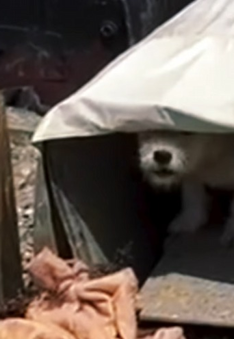
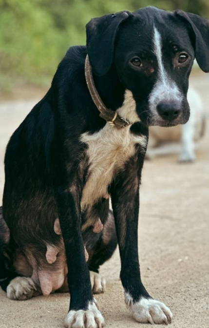

O QUE SÃO MAUS TRATOS A ANIMAIS?
Maus tratos a animais incluem qualquer ação que cause sofrimento físico ou psicológico a um animal:
- Espancamento
- Envenenamento
- Privações de alimento e água
- Manter o animal em local sujo ou apertado
- Exposição constante ao sol, frio ou chuva
- Abandono
- Exploração para trabalho excessivo
- Usar em rinhas
DEFINIÇÃO
Maus-tratos animais (ou crueldade animal), infelizmente, ainda são ações ou omissões que causam sofrimento aos animais. Exemplos: abandono, exploração em atividades indevidas, envenenamento, negligência, entre outros. Esses atos são crimes de acordo com a legislação brasileira e podem acarretar pena de prisão e multa.
DISQUE: IBAMA (Linha Verde 0800 618080) ou Delegacia de Meio Ambiente da Polícia Civil: (61) 3234-5481
 